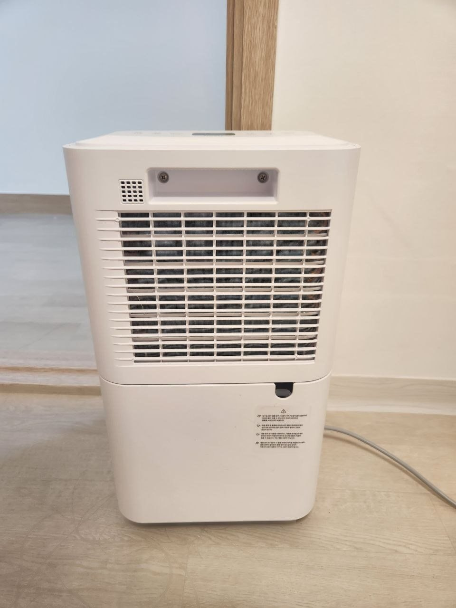
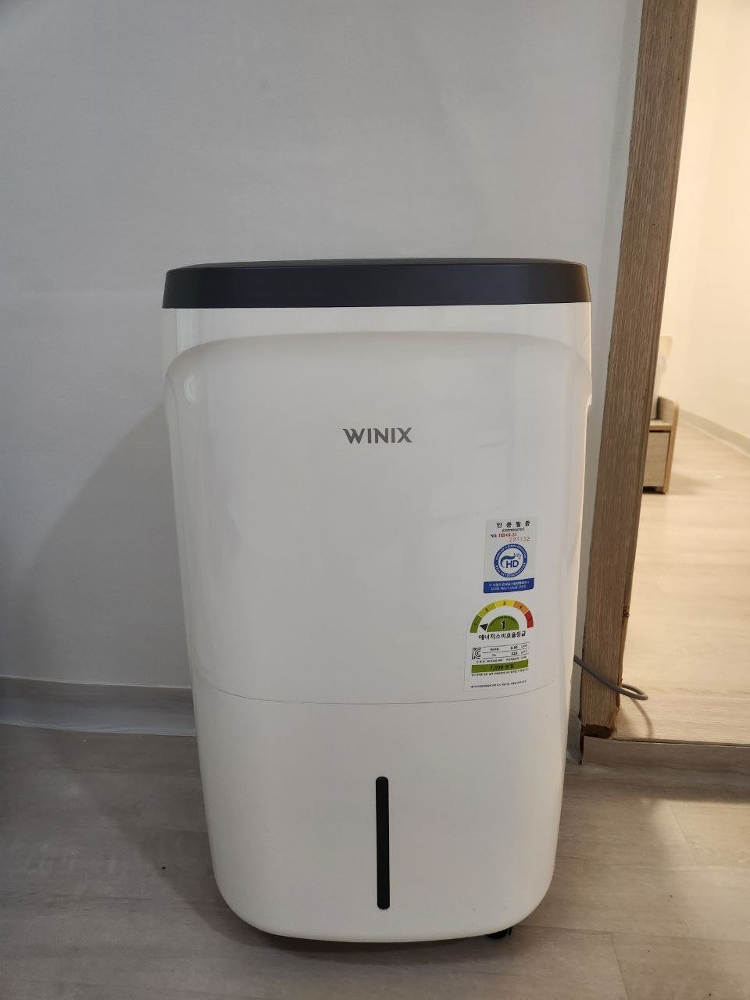
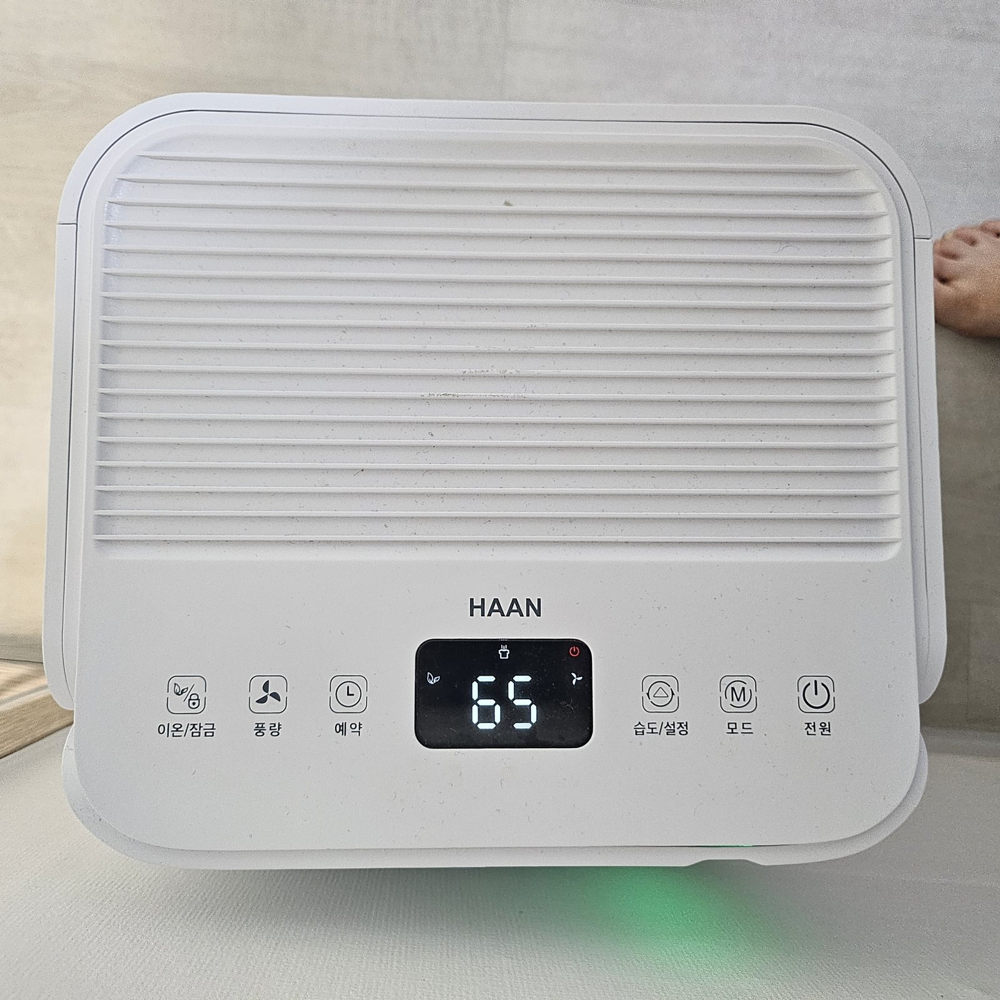
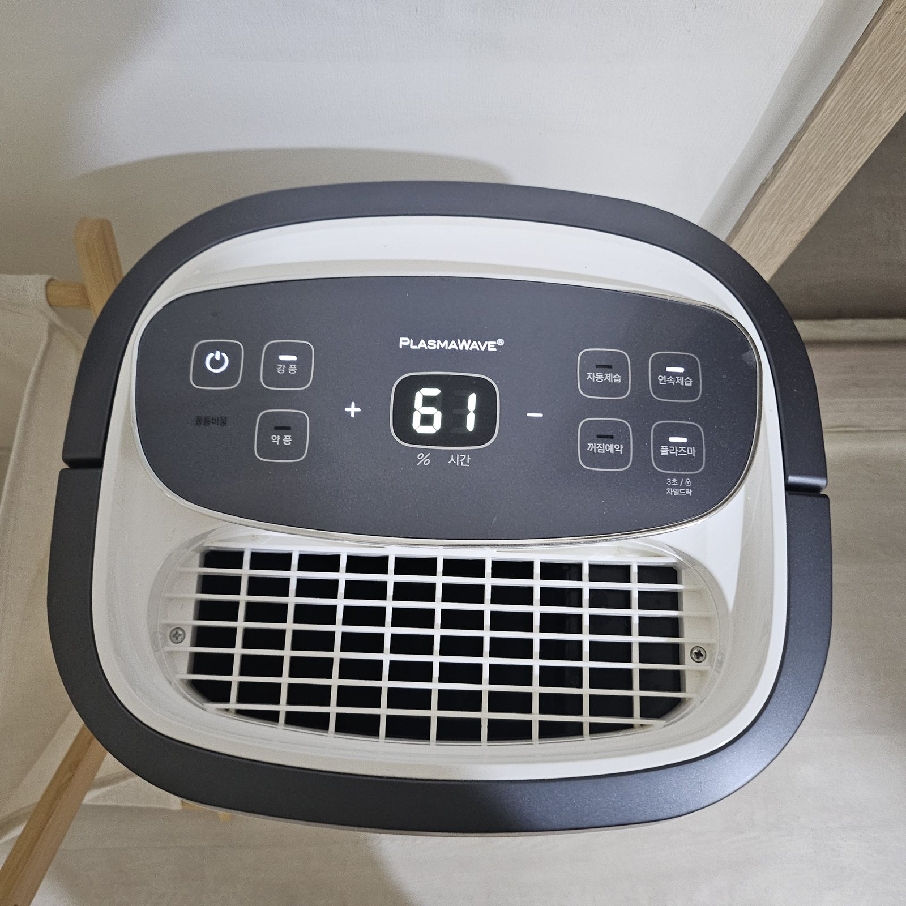
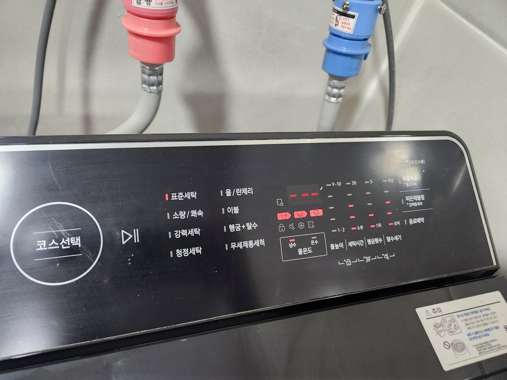
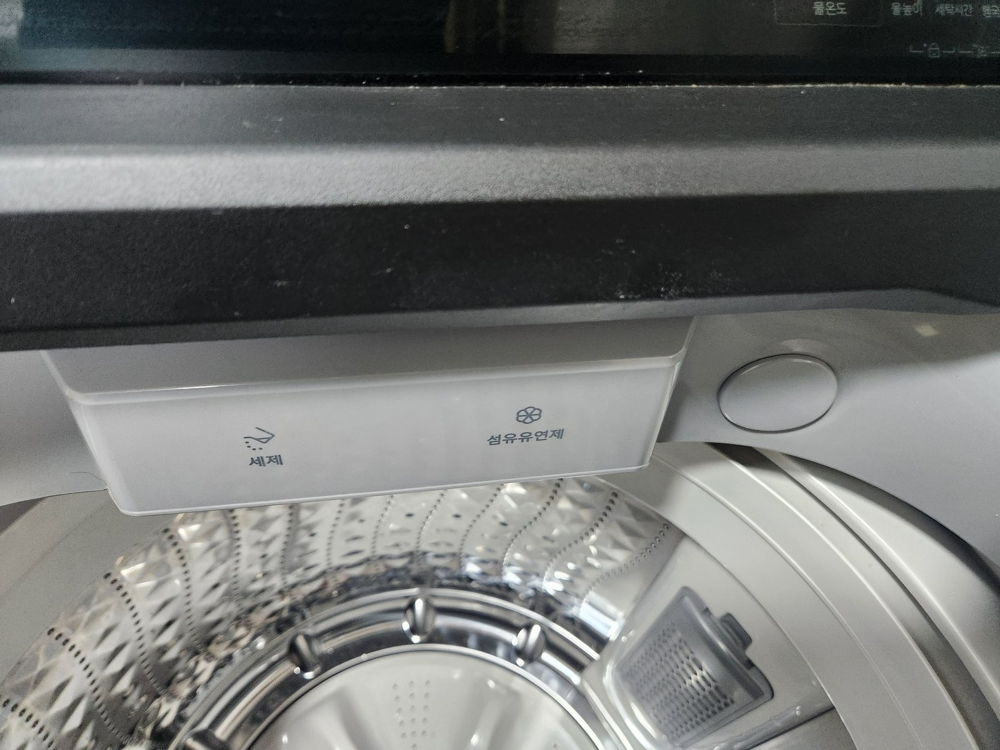
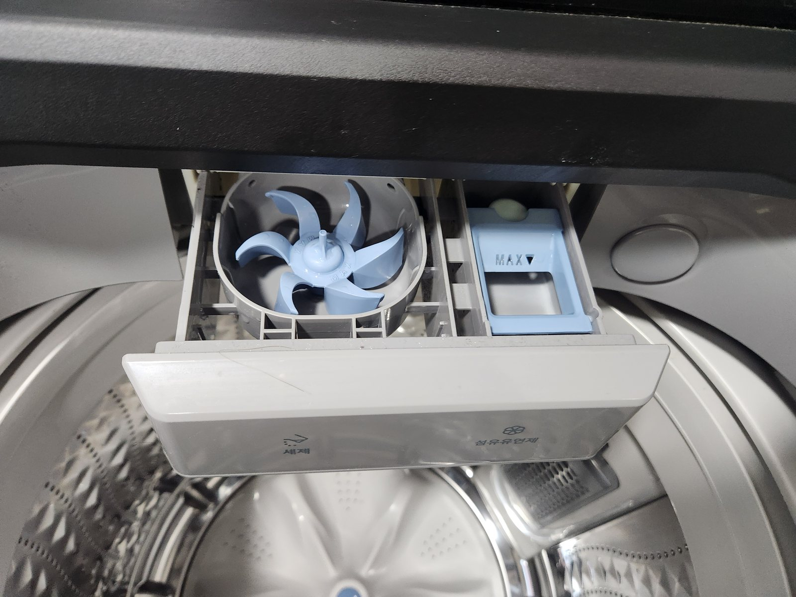
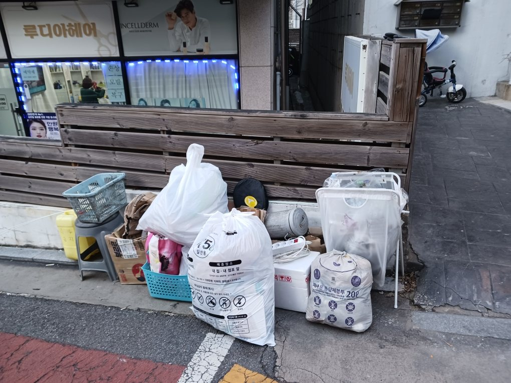

도어락 비밀번호는 체크인 1시간 전에 전송됩니다.
- 도어락 사용법
- 체크인 1시간 전 비밀번호를 전송해드립니다.
- 주차 안내
- 건물 주차는 불가능합니다. 차량 이용 시 근처 성내전통시장 공영주차장을 이용해주세요.
- 공영주차장 지도
- 성내전통시장 공영주차장 지도 보기
- 짐 보관
- 기본적으로 제공하지 않습니다.
Guest Guide · Welcome
체크인부터 주변 산책 코스까지, 필요한 순간에 살짝 열어보는 작은 안내서예요.
도어락 비밀번호는 체크인 1시간 전에 전송됩니다.
건물 주차는 불가하며, 근처 성내전통시장 공영주차장을 이용해주세요.
현재 인터넷이 수리 중입니다. 이용에 불편을 드려 죄송합니다.
숙소에는 제습기 2대가 있습니다. 물통이 가득 차면 아래 사진의 물통을 비운 뒤 다시 끼워주세요.

물통을 비워주세요 / Empty tank
물통을 비워주세요 / Empty tank
전원 / Power LED 표시 / LED display
물통비움 / Empty tank light숙소의 세탁기와 건조대를 이용해 빨래를 하실 수 있습니다. 건조가 더 필요하거나 큰 빨래가 있을 때는 근처 빨래방도 이용하실 수 있습니다.

코스 선택 / Course Select 표준세탁 / Standard Wash
이 통을 열어주세요 / Open this drawer
세제 / Detergent 섬유유연제 / Fabric softener
쓰레기 배출 장소 / Trash disposal area긴급 상황에서는 112(범죄신고), 119(응급구조) 또는 체크인 메시지로 별도 전달된 호스트 연락처로 연락해주세요.
호스트 연락처는 체크인 메시지로 별도 전달드립니다.
비상 상황의 경우 별도 전달된 연락처로 전화주세요. 그 외 일상적인 문의는 오전 9시부터 오후 7시까지 에어비앤비 메시지 또는 문자로 보내주시면 가능한 빠르게 답신드리겠습니다.
검색 결과가 없습니다.